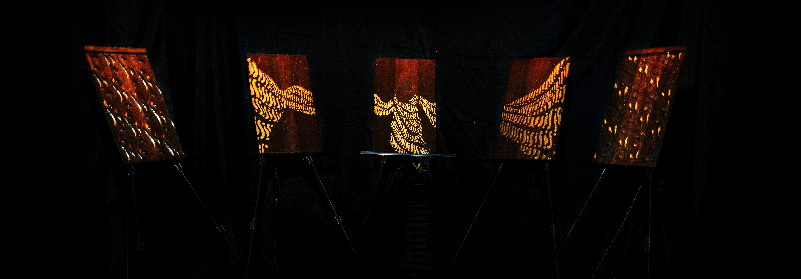
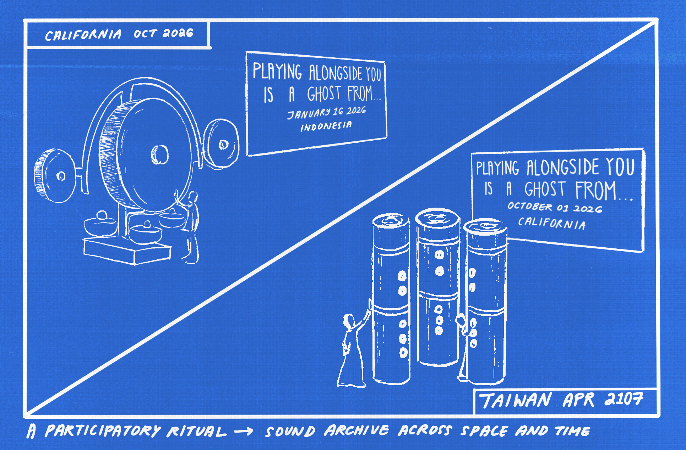
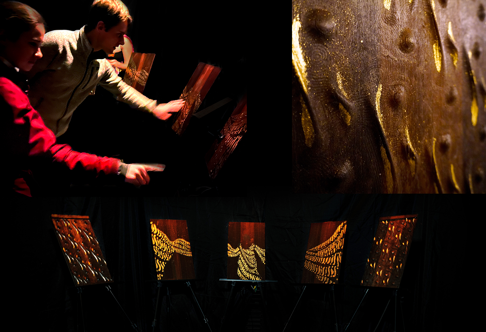

lagu hantu
2026
Lagu Hantu is an instrument that remembers everyone who has ever played it.
When someone plays it, a bespoke computational algorithm searches an ever-growing archive of every past performance, summoning fragments that once accompanied similar gestures and playing them back through nearby loudspeakers. Participants may choose to bring home a printed record of their performance's closest companions across time, revealing where and when those past players once touched the instrument. You never play alone. The instrument is the archive.
With Lagu Hantu, we argue that archives can be rituals, not repositories—playing music together across centuries being communion.
EXHIBITIONS
NIME 2026, LONDON
DOLORES PARK, SAN FRANCISCO
HASSO PLATTNER INSTITUTE OF DESIGN, STANFORD UNIVERSITY


